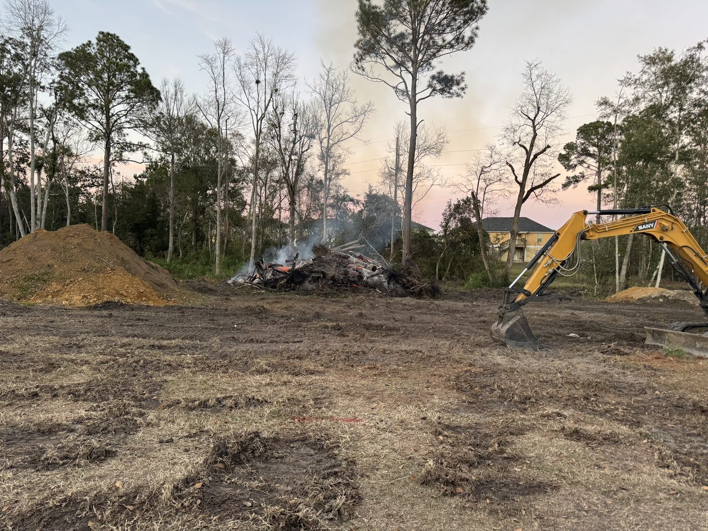

field log —
The Essential Role of Quality Drainage and Land Management in Effective Property Maintenance

Proper property maintenance goes beyond simple upkeep. It requires a strategic approach to managing water flow, vegetation, and land features to protect the land and enhance its value. Quality drainage and land management are critical components that prevent costly damage, improve usability, and maintain the health of your property. ECS offers a comprehensive range of services to meet these needs, including drainage solutions, forestry mulching, land clearing, fence row and pond cleanup, and more.
Understanding why these elements matter can help property owners make informed decisions and avoid common pitfalls.

Why Quality Drainage Matters
Water is essential for life, but uncontrolled water can cause serious problems on your property. Poor drainage leads to soil erosion, flooding, foundation damage, and even loss of usable land. Here’s why investing in quality drainage solutions is crucial:
Prevents Soil Erosion
Water running unchecked can wash away topsoil, which is vital for plant growth and land stability. Proper drainage channels water safely away, preserving the soil structure.
Protects Structures and Foundations
Excess water pooling near buildings can weaken foundations and cause costly structural damage. Drainage systems direct water away from these vulnerable areas.
Reduces Flood Risk
Well-designed drainage helps manage heavy rainfall and runoff, preventing flooding that can damage property and disrupt daily life.
Improves Land Usability
Waterlogged land is difficult to use for farming, recreation, or construction. Effective drainage keeps land dry and accessible.
ECS specializes in creating drainage systems tailored to your property’s unique needs, ensuring water flows where it should without causing harm.
The Importance of Land Management
Land management involves maintaining and improving the natural features of your property to support its health and productivity. This includes controlling vegetation, managing soil quality, and maintaining natural water flow. Good land management offers several benefits:
Enhances Soil Health
Removing invasive plants and managing vegetation promotes nutrient-rich soil, which supports healthy plant growth.
Prevents Overgrowth and Fire Hazards
Forestry mulching and land clearing reduce dense underbrush that can fuel wildfires and make land difficult to navigate.
Supports Wildlife and Biodiversity
Proper management creates habitats for native species, contributing to a balanced ecosystem.
Maintains Property Value
Well-managed land looks cared for and is more attractive to buyers or tenants.
ECS provides forestry mulching and land clearing services that efficiently remove unwanted vegetation without damaging the soil, preparing your land for future use.
How Property Maintenance Benefits from Drainage and Land Management
Property maintenance is more than mowing the lawn or fixing fences. It requires a holistic approach that includes managing water and land features to prevent problems before they start.
Fence Row Cleanup
Clearing brush and debris along fence lines prevents damage and makes repairs easier. It also improves visibility and security.
Pond Cleanup and Maintenance
Ponds can become clogged with sediment and vegetation, reducing their usefulness and harming aquatic life. Regular cleanup keeps ponds healthy and functional.
Preventing Pest Infestations
Standing water and dense vegetation attract pests like mosquitoes and rodents. Proper drainage and land clearing reduce these risks.
Reducing Long-Term Costs
Addressing drainage and land issues early prevents expensive repairs and land degradation.
ECS offers a one-stop solution for these maintenance tasks, combining expertise and equipment to keep your property in top shape.
Practical Examples of Effective Drainage and Land Management
Consider a rural farm where heavy rains caused flooding and soil erosion. ECS installed a drainage system that redirected water into safe channels, protecting crops and preventing soil loss. Forestry mulching cleared overgrown areas, reducing fire risk and improving access for farm equipment.
In another case, a residential property had a neglected pond filled with algae and sediment. ECS performed a pond cleanup, restoring water quality and making the pond a pleasant feature for the homeowners.
These examples show how targeted services improve property function and value.
Choosing the Right Partner for Your Property Needs
Selecting a company that understands the complexities of drainage and land management is key. ECS stands out by offering:
Comprehensive Services
From drainage installation to land clearing and pond cleanup, ECS covers all aspects of property maintenance.
Experienced Team
Skilled professionals assess your property and recommend tailored solutions.
Modern Equipment
Forestry mulchers, excavators, and other machinery ensure efficient and effective work.
Customer Focus
ECS works closely with clients to meet their goals and budgets.
Working with a trusted partner simplifies property maintenance and delivers lasting results.
Reproduced from Environmental Construction Services' public blog (environmentalconstructions.com). Part of this private website concept.